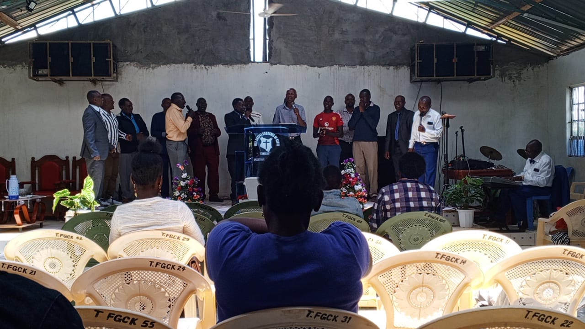
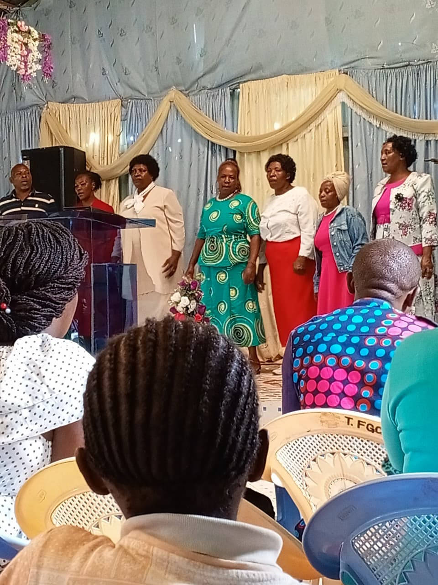
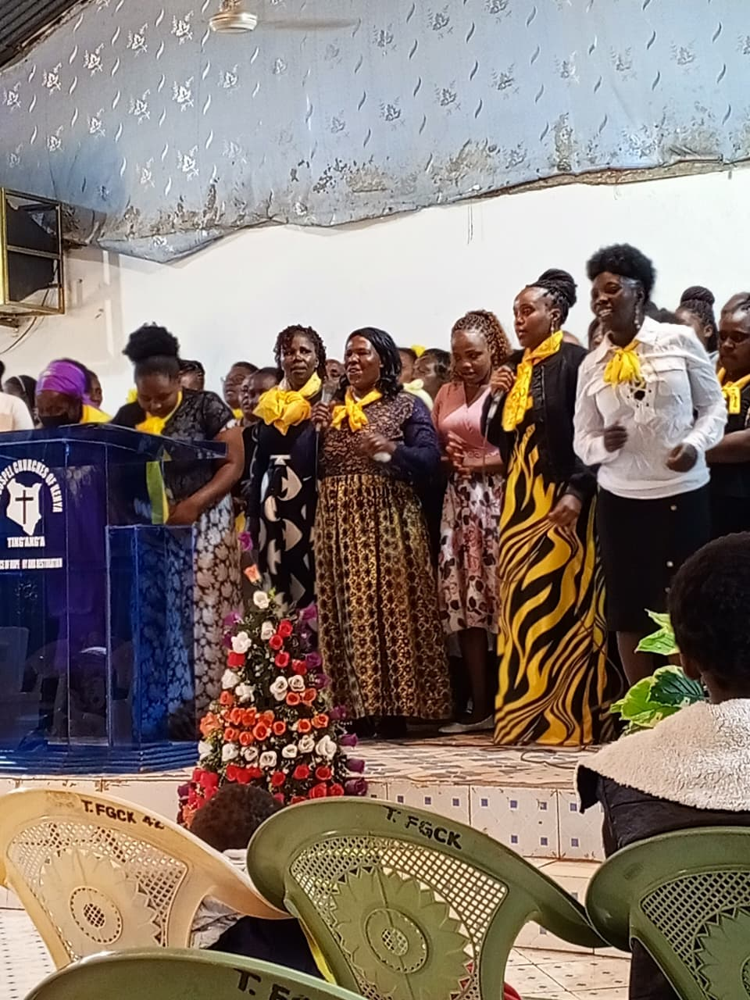
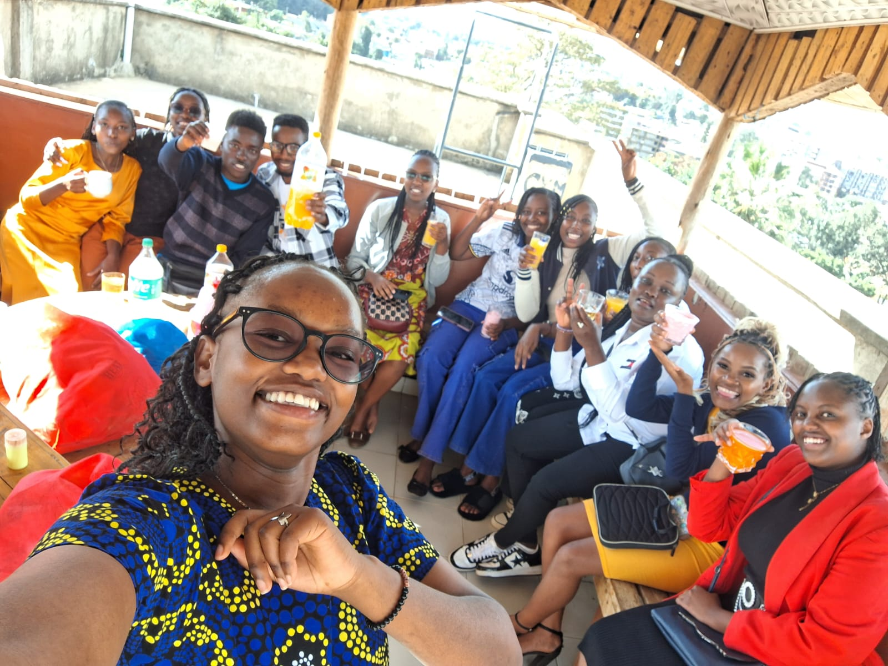

Full Gospel Churches of Kenya
Ting'ang'a
A place of hope, joy and restoration
Moments of Worship
Support the Mission
💰 M-Pesa Paybill
Business No: 247247
Account Name: 871275#tings (Offerings / Tithe)
Steps: Go to M-Pesa ➜ Lipa na M-Pesa ➜ Paybill ➜ Enter Business No, Account Name ➜ Amount
📖 Malachi 3:10 “Bring the whole tithe into the storehouse... and see if I will not throw open the floodgates of heaven and pour out so much blessing that there will not be room enough to store it.”
Your generosity fuels revival in Ting'ang'a and beyond.
Reach Out
📞 Contact Info
📍 Address: Ting'ang'a Road, off Kiambu-Githunguri road, Ting'ang'a, Kiambu
📞 Phone: +254 723 973731
✉️ Email: info@fgckentinganga.org
🕊️ Office Hours: Mon-Fri 4pm - 6pm
Send us a Message
Our History & Vision
Since 1978 – A Journey of Faith
The history of the FGCK-Ting'ang'a is closely tied with the history of FGCK Kiambu and the Full Gospel Churches of Kenya nation-wide. Ting'ang'a FGCK was started by the late Pastor David Kahura and brethren from Kiambu branch in 1979. Kiambu branch had been planted in 1978 by the Pastor assisted by his wife Mrs. Mary Njoki. Ting'ang'a church was started through tent-meetings in Ting'ang'a shopping center. Later, a room was rented for Sunday services in Mai-ini area while the evangelistic meetings continued to be conducted in the tent. In the early period, the situation was not very easy. To start with, FGCK was one of the pioneer Pentecostal churches in the area after PAG. The mainstream churches were very skeptical about the new church. It was viewed as a cult since most of its practices like night vigils, drums, vigorous singing, shouting and speaking in new tounges were strange to most of the local people. There was much opposition when the church tried to get land. Finally, the church was given a public place to put up the church sanctuary, the ground on which the stands up to date. Pastor Kahura personally dug the toilet after the church acquired the plot ar around 1985. The following are the existing members of the church who were there before or in 1990. Their years of joining the church are given: John Ng'ang'a Wahiti (1983), Mary Wanjiru Kinuthia (1984), Margaret W. Gaitho (1984), David Njuguna (1989), James Kimani (1990). The late deacon Alice Marigi joined in 1988. Pastor Sammy Maina famously known as Samama came to shepherd the church sometimes in 1995 or 1996. With his departure in 1998, Pastor Kahura came back and pastored the church alongside Kiambu and Kamiti branches from 1998 In June 2000, Pastor Simon Githuki was appointed as a pastor and took over the church leadership. He was able to structure the leadership of the church in a much better way. Under the watch of Pastor Githuki, the church was able to put up a bigger hall. In 2001, Ting'ang'a church split, and some members went to form Full Gospel Communication Church. This split was occasioned by leadership battle to head Kiambu LCA which was to be dedicated soon by Nairobi LCA.
Pastor Simon Githuki (now Bishop Githuki) was seconded to go and be the pastor in charge of Kajiado LCA from August 2007. Meanwhile Pastor Michael G. Mwangi had relocated to Kiambu from Nyeri in July the same year. With the departure of Pastor Githuki from Ting'ang'a, Pastor Michael was sent by the LCA Council to come and be in charge of the branch. He reported on 31st August 2007 and since has been the branch Pastor. Under his watch, the church has continued to grow and stabilise while new departments have come up to cater for the growing needs. The church has acquired a more spacious plot to allow physical development. Other initiatives under the leadership of Pastor Michael are an education department, a Vacational Bible School (VBS), community initiatives like Finishing the Race Marathon just to mention a few. The church stands at around 150 adult members and more than 100 children. Other achievements by the church include sending Pastor Amos Mwaniki to FGCK Githogoro and a number of members to Short term Missionary to Witu. Truly, Ting'ang'a FGCK has a bright future. The church is growing both numerically and structurally. There are all reasons to believe that the time of the take-off to above 500 people is now. And with God we believe that all things are possible. Let us all rise and shine for our light has come.
Today, we continue to stand on the Word, serve the needy, disciple families, and raise passionate worshipers. We believe that every person has a divine purpose, and our doors are open for all to experience God's unconditional love.
Core Values
- Hope – Christ our anchor
- Joy – Celebrating God's presence
- Restoration – Healing and new beginnings
- Community – One family in Ting'ang'a
Upcoming Events
Shepherd Team & Leadership
Mens Wawema Ministry
Photos / Videos

Topics Discussed
- Prayer & Brotherhood
- Faith & Restoration
- Men in Service & Outreach
Women Ministry
Photos / Videos
Photo Gallery


Videos
Topics Discussed
- Faith for Daily Living
- Prayer & Family Restoration
- Women in Leadership
Youth Ministry
Photos / Videos
Photo Gallery

Topics Discussed
- Christian Identity & Purpose
- Prayer & Worship
- Outreach & Service
Sunday School Ministry
Photos / Videos
(Add your ministry photos and video embeds here.)
Photo Gallery Placeholder
Video Placeholder
Topics Discussed
- Bible Stories & Lessons
- Prayer for Children
- Memory Verses